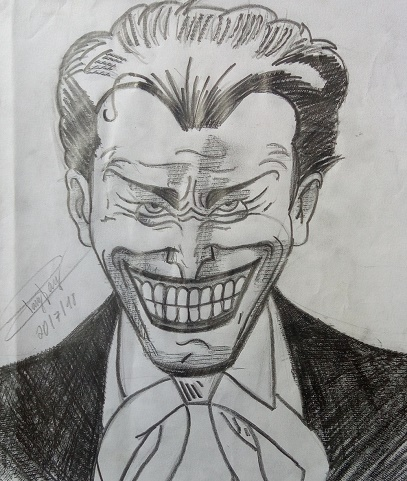

Coringa
Home
|
Naruto/Boruto
|
Goku
|
Coringa

Coringa (The Joker) é um supervilão fictício que aparece nas histórias em quadrinhos
publicados pela editora estadunidense DC Comics. Foi criado por Jerry Robinson,
Bill Finger e Bob Kane e apareceu pela primeira vez em Batman #1 (Abril de 1940).